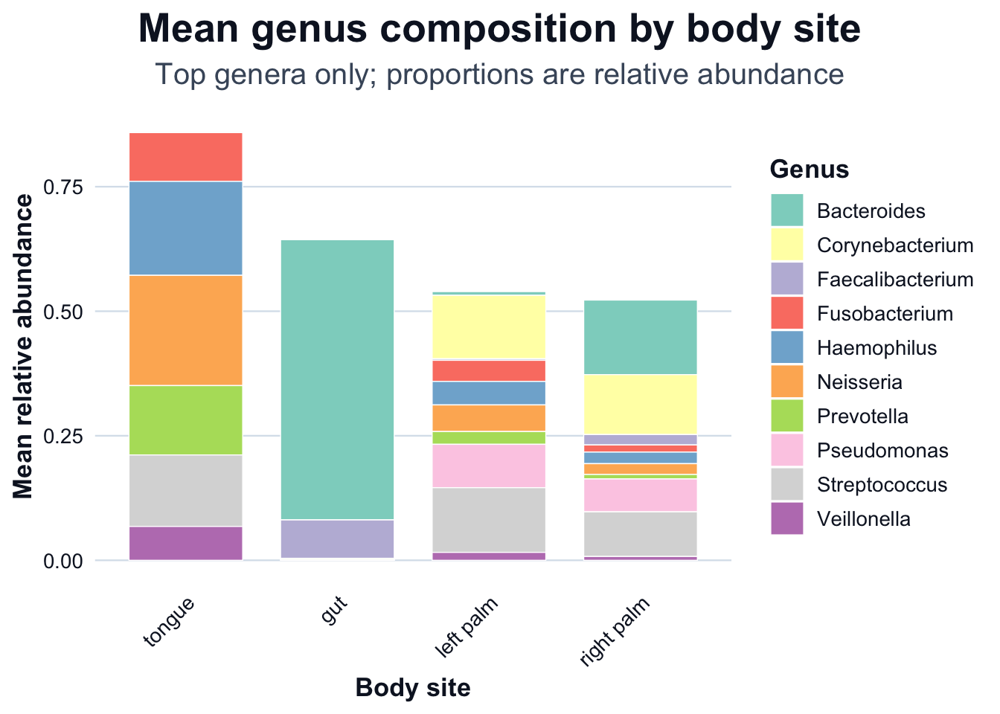
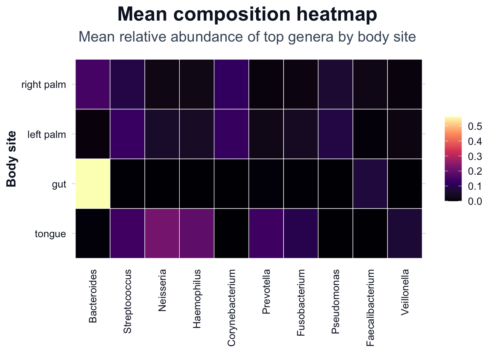

library(phyloseq)
ps <- readRDS("data/moving-pictures-ps.rds")Composition Visualization
Composition plots are often the first figures shown in microbiome studies.
Bar plots at the phylum or genus level are common. They appear intuitive. They are also easy to misinterpret.
This chapter focuses on:
- transforming counts to relative abundance
- aggregating taxa to a chosen rank
- visualizing composition across metadata groups
- understanding compositional limitations
Load data
Transform to relative abundance
Raw counts are not comparable across samples with different sequencing depth.
ps_rel <- phyloseq::transform_sample_counts(ps, function(x) x / sum(x))
range(phyloseq::sample_sums(ps_rel))[1] 1 1Aggregate to genus level
ps_genus <- phyloseq::tax_glom(ps_rel, taxrank = "Genus")
phyloseq::ntaxa(ps_genus)[1] 197Remove taxa without genus assignment:
ps_genus <- phyloseq::subset_taxa(ps_genus, !is.na(Genus))
phyloseq::ntaxa(ps_genus)[1] 197Identify top genera
To improve readability, select the globally most abundant genera.
genus_abundance <- phyloseq::taxa_sums(ps_genus)
top_genera <- names(sort(genus_abundance, decreasing = TRUE))[1:10]
ps_top <- phyloseq::prune_taxa(top_genera, ps_genus)
phyloseq::ntaxa(ps_top)[1] 10Prepare composition table for plotting
We compute mean relative abundance by body site, then visualize it using two R figures: a stacked bar chart and a heatmap.
# Long format table (sample-level)
df_comp <- phyloseq::psmelt(ps_top)
# Detect column names robustly (psmelt can vary by dataset)
cols <- names(df_comp)
sample_col <- if ("Sample" %in% cols) "Sample" else if ("SampleID" %in% cols) "SampleID" else if ("sample_id" %in% cols) "sample_id" else NA_character_
body_col <- if ("body-site" %in% cols) "body-site" else if ("body.site" %in% cols) "body.site" else if ("body_site" %in% cols) "body_site" else NA_character_
if (is.na(sample_col) || is.na(body_col)) {
stop(
"Expected columns not found in psmelt output.
",
"Available columns: ", paste(cols, collapse = ", "), "
",
"Missing: ",
paste(c(if (is.na(sample_col)) "Sample/SampleID" else NULL,
if (is.na(body_col)) "body-site/body.site/body_site" else NULL),
collapse = ", ")
)
}
# Keep only what we need and standardize names
df_comp <- df_comp[, c(sample_col, "Abundance", "Genus", body_col)]
names(df_comp) <- c("Sample", "Abundance", "Genus", "body_site")
# Mean relative abundance by (body_site, Genus)
df_mean <- aggregate(
Abundance ~ body_site + Genus,
data = df_comp,
FUN = mean
)
dir.create("outputs/tables", recursive = TRUE, showWarnings = FALSE)
readr::write_csv(df_mean, "outputs/tables/mean-composition-body-site-genus.csv")
head(df_mean) body_site Genus Abundance
1 gut Bacteroides 0.5623933731
2 left palm Bacteroides 0.0074999258
3 right palm Bacteroides 0.1497196754
4 tongue Bacteroides 0.0023039649
5 gut Corynebacterium 0.0001221555
6 left palm Corynebacterium 0.1273285793Composition by body site
# Order body sites by total mean abundance across the plotted genera
body_order <- df_mean |>
dplyr::group_by(body_site) |>
dplyr::summarise(total = sum(Abundance, na.rm = TRUE), .groups = "drop") |>
dplyr::arrange(dplyr::desc(total)) |>
dplyr::pull(body_site)
df_mean$body_site <- factor(df_mean$body_site, levels = body_order)
ggplot2::ggplot(df_mean, ggplot2::aes(x = body_site, y = Abundance, fill = Genus)) +
ggplot2::geom_col(width = 0.75, color = "white", linewidth = 0.25) +
ggplot2::labs(
title = "Mean genus composition by body site",
subtitle = "Top genera only; proportions are relative abundance",
x = "Body site",
y = "Mean relative abundance"
) +
ggplot2::theme_minimal(base_size = 14) +
ggplot2::theme(
plot.title = ggplot2::element_text(face = "bold", hjust = 0.5),
plot.subtitle = ggplot2::element_text(hjust = 0.5, color = "#475569"),
axis.text.x = ggplot2::element_text(angle = 90, hjust = 1, vjust = 0.5, size = 9),
panel.grid.minor = ggplot2::element_blank(),
legend.title = ggplot2::element_text(face = "bold"),
legend.position = "right"
) +
ggplot2::scale_fill_brewer(palette = "Set3")
Composition heatmap
# Order genera by overall mean abundance (top to bottom in legend)
genus_order <- df_mean |>
dplyr::group_by(Genus) |>
dplyr::summarise(total = sum(Abundance, na.rm = TRUE), .groups = "drop") |>
dplyr::arrange(dplyr::desc(total)) |>
dplyr::pull(Genus)
df_heat <- df_mean
df_heat$Genus <- factor(df_heat$Genus, levels = genus_order)
df_heat$body_site <- factor(df_heat$body_site, levels = levels(df_mean$body_site))
ggplot2::ggplot(df_heat, ggplot2::aes(x = Genus, y = body_site, fill = Abundance)) +
ggplot2::geom_tile(color = "white", linewidth = 0.25) +
ggplot2::labs(
title = "Mean composition heatmap",
subtitle = "Mean relative abundance of top genera by body site",
x = NULL,
y = "Body site",
fill = NULL
) +
ggplot2::scale_fill_viridis_c(
option = "magma",
name = "Mean rel.\nabund."
) +
ggplot2::theme_minimal(base_size = 14) +
ggplot2::theme(
plot.title = ggplot2::element_text(face = "bold", hjust = 0.5),
plot.subtitle = ggplot2::element_text(hjust = 0.5, color = "#475569"),
axis.text.x = ggplot2::element_text(angle = 90, hjust = 1, vjust = 0.5, size = 9),
panel.grid = ggplot2::element_blank()
)
Limitations of composition plots
Composition plots:
- are constrained by constant-sum scaling
- cannot reveal absolute abundance changes
- are sensitive to filtering and aggregation level